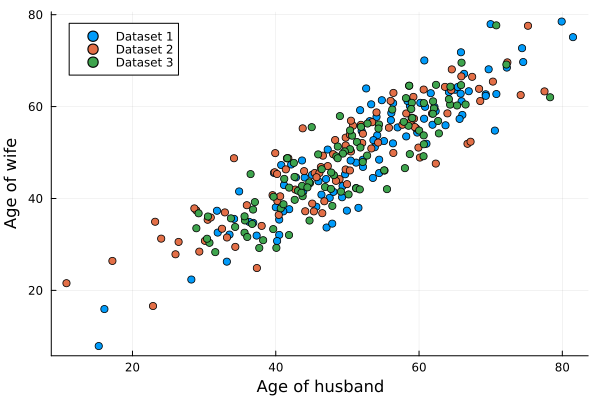
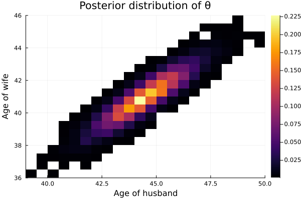
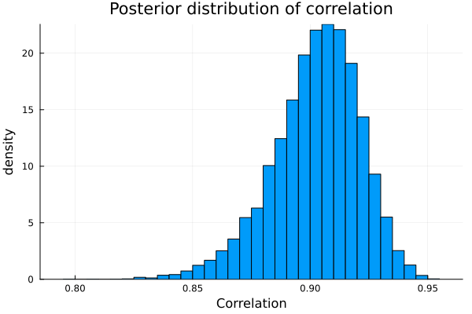
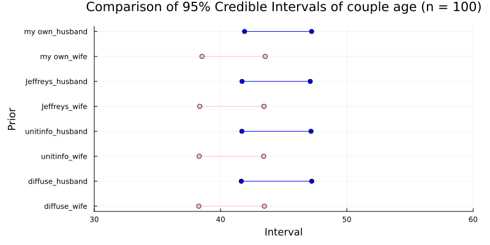
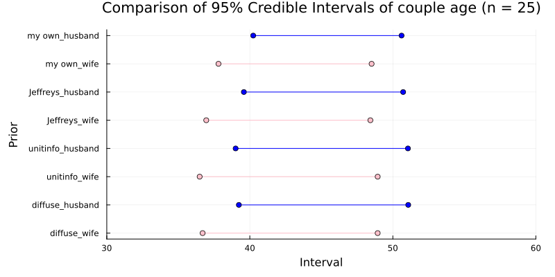
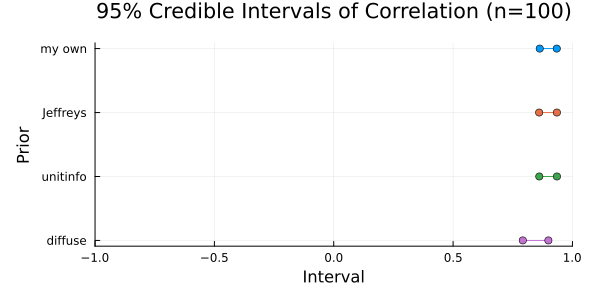
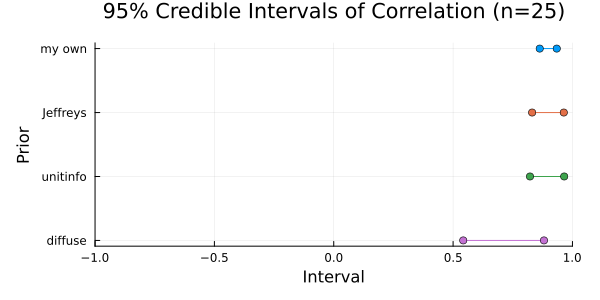

Exercise 7.4 Solution Example - Hoff, A First Course in Bayesian Statistical Methods
標準ベイズ統計学 演習問題 7.4 解答例
a)
Answer
自分のイメージでは、アメリカの平均的な夫婦の年齢は 50 歳くらいで、やや女性の方が若いと思うので、\(\mu_h = 51, \mu_h = 49\) とする。また、95%くらいで、25 歳から 75 歳くらいまでの範囲に収まると思うので、 \(\sigma_h = \sigma_w = 12.5\) とする。夫婦の年齢の相関はかなり大きいイメージなので、0.9 になるように、
\begin{align*} &0.9 = \frac{\sigma_{hw}}{\sigma_h \sigma_w} = \frac{\sigma_{hw}}{12.5^2} \\ \iff &\sigma_{hw} = 0.9 \times 12.5^2 = 140.625 \end{align*}と設定する。まとめると、私の prior は以下のようになる。
\begin{align*} \boldsymbol{\mu}_0 &= (51, 49)^T \\ \Lambda_0 &= \begin{pmatrix} 12.5^2 & 140.625 \\ 140.625 & 12.5^2 \end{pmatrix} \\ \end{align*}b)
Answer
μ₀ = [51, 49] Λ₀ = [ 12.5^2 140.625 140.625 12.5^2 ] # %% n = 100 prior_dist = MvNormal(μ₀, Λ₀) dataset1 = rand(prior_dist, n) dataset2 = rand(prior_dist, n) dataset3 = rand(prior_dist, n)

- 割とイメージ通りかなあ
c)
Answer
joint posterior distribution of \(\theta_h\) and \(\theta_w\)
agehw = readdlm("../../Exercises/agehw.dat", skipstart=1) p = size(agehw,2) S = 10000 Σ_init = cov(agehw) S₀ = Λ₀ ν₀ = p+2 THETA, SIGMA = bivariate_gibbs(S, Σ_init, μ₀, Λ₀, S₀, ν₀, agehw) COR = get_pos_cor(SIGMA, p, S)

marginal posterior density of the correlation between \(Y_h\) and \(Y_w\)

95% posterior confidence intervals for \(\theta_h\), \(\theta_w\), and the correlation coefficient
quantile(THETA[:, 1], [0.025, 0.975]) quantile(THETA[:, 2], [0.025, 0.975]) quantile(COR[1, 2, :], [0.025, 0.975])
2-element Vector{Float64}:
41.82793288516493
47.10559872633597
2-element Vector{Float64}:
38.46175689329701
43.44815317601299
2-element Vector{Float64}:
0.8602554314182437
0.9340079518830947
d)
Answer
Jeffreys’ prior
THETA_J = Matrix{Float64}(undef, S, 2) SIGMA_J = Matrix{Float64}(undef, S, 4) n = size(agehw, 1) ȳ = mean(agehw, dims=1) |> vec # Gibbs sampler Σ = cov(agehw) # use the sample covariance matrix as initial value for s in 1:S # update θ θ = rand(MvNormal(ȳ, Symmetric(Σ ./ n))) # update Σ S_θ = (agehw' .- θ) * (agehw' .- θ)' Σ = rand(InverseWishart(n+1, S_θ)) # save results THETA_J[s, :] = vec(θ) SIGMA_J[s, :] = vec(Σ) end COR_J = get_pos_cor(SIGMA_J, p, S) # 95% credible interval quantile(THETA_J[:, 1], [0.025, 0.975]) quantile(THETA_J[:, 2], [0.025, 0.975]) quantile(COR_J[1, 2, :], [0.025, 0.975])
julia> quantile(THETA_J[:, 1], [0.025, 0.975])
2-element Vector{Float64}:
41.68056977372846
47.14646200233917
julia> quantile(THETA_J[:, 2], [0.025, 0.975])
2-element Vector{Float64}:
38.3145806498635
43.44817143945637
julia> quantile(COR_J[1, 2, :], [0.025, 0.975])
2-element Vector{Float64}:
0.861004578540727
0.9345565686407257
the unit information prior
S_y = (agehw' .- ȳ) * (agehw' .- ȳ)' ./ n THETA_U = Matrix{Float64}(undef, S, 2) SIGMA_U = Matrix{Float64}(undef, S, 4) for s in 1:S # sample Σ Σ = rand(InverseWishart(n-p-1, S_y .* (n+1))) # sample θ θ = rand(MvNormal(ȳ, Symmetric(Σ ./ (n+1)))) # save results THETA_U[s, :] = vec(θ) SIGMA_U[s, :] = vec(Σ) end COR_U = get_pos_cor(SIGMA_U, p, S) # 95% credible interval quantile(THETA_U[:, 1], [0.025, 0.975]) quantile(THETA_U[:, 2], [0.025, 0.975]) quantile(COR_U[1, 2, :], [0.025, 0.975])
julia> quantile(THETA_U[:, 1], [0.025, 0.975])
2-element Vector{Float64}:
41.72596492912597
47.1866768937701
julia> quantile(THETA_U[:, 2], [0.025, 0.975])
2-element Vector{Float64}:
38.33626197183087
43.4809122415242
julia> quantile(COR_U[1, 2, :], [0.025, 0.975])
2-element Vector{Float64}:
0.8600180341629133
0.9358050299774748
diffuse prior
μ₀ = zeros(p) Λ₀ = 10^5 .* Matrix{Float64}(I, p, p) S₀ = 1000 .* Matrix{Float64}(I, p, p) ν₀ = 3 Σ_init = cov(agehw) THETA_D, SIGMA_D = bivariate_gibbs(S, Σ_init, μ₀, Λ₀, S₀, ν₀, agehw) COR_D = get_pos_cor(SIGMA_D, p, S) # 95% credible interval quantile(THETA_D[:, 1], [0.025, 0.975]) quantile(THETA_D[:, 2], [0.025, 0.975]) quantile(COR_D[1, 2, :], [0.025, 0.975])
julia> quantile(THETA_D[:, 1], [0.025, 0.975])
2-element Vector{Float64}:
41.716486213023344
47.116138763264516
julia> quantile(THETA_D[:, 2], [0.025, 0.975])
2-element Vector{Float64}:
38.335596688123054
43.49771322728793
julia> quantile(COR_D[1, 2, :], [0.025, 0.975])
2-element Vector{Float64}:
0.7916370487843212
0.9002008981233564
e)
Answer
Comparison of 95% Credible Intervals of couple age


Comparison of 95% Credible Intervals of correlation coefficient


Discussion
日本語
サンプルサイズが大きい場合\((n=100)\)、事前の情報は事後分布にほとんど影響を与えなていない。一方で、サンプルサイズが小さいと\((n=25)\)、相関係数の信用区間のプロットからもわかるように、事前の情報が事後分布に与える影響が大きくなるので、事前の情報が重要になる。
English
When the sample size is large (n=100), the prior information has almost no influence on the posterior distribution.
On the other hand, when the sample size is small (n=25), as can also be seen from the plot of the credible interval for the correlation coefficient, the influence of the prior information on the posterior distribution becomes larger, making the prior information important.